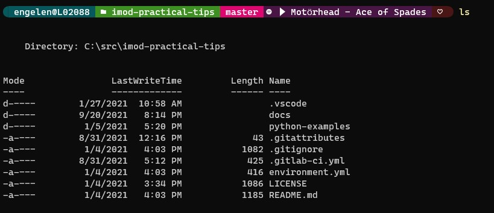
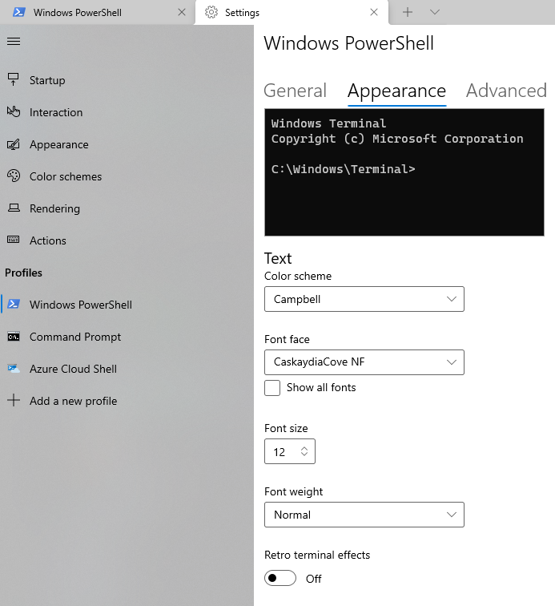
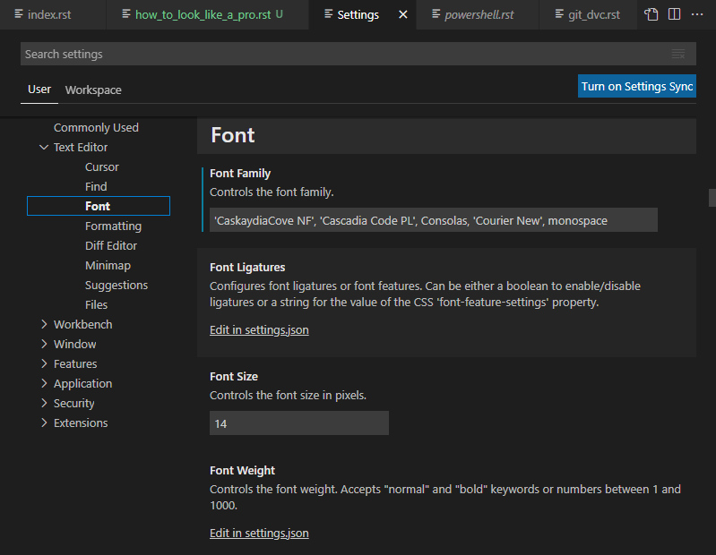
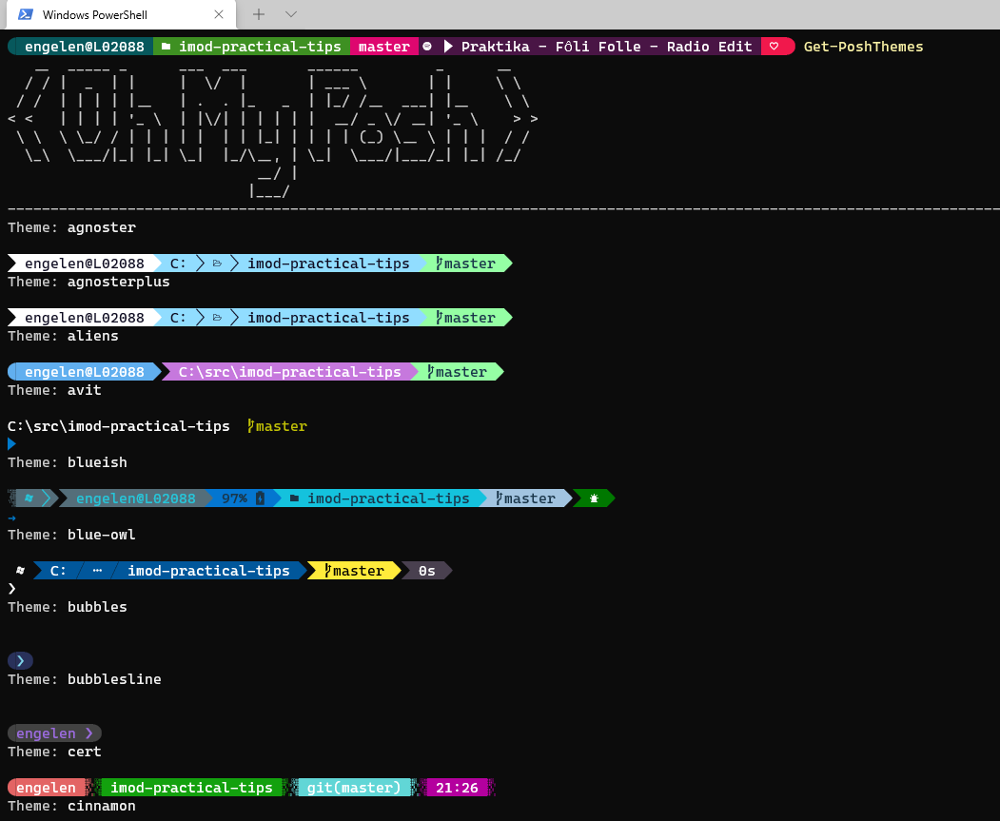
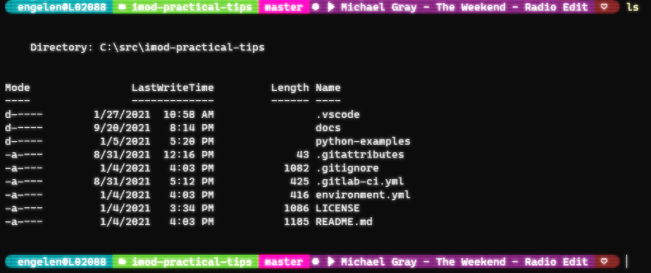

<!DOCTYPE html>
<html xmlns="http://www.w3.org/1999/xhtml" lang="en" xml:lang="en"><head>

<meta charset="utf-8">
<meta name="generator" content="quarto-1.4.550">

<meta name="viewport" content="width=device-width, initial-scale=1.0, user-scalable=yes">

<meta name="description" content="Some general tips and tricks to make your editors and terminals look cool.">

<title>iMOD Suite -  How to look like a pro</title>
<style>
code{white-space: pre-wrap;}
span.smallcaps{font-variant: small-caps;}
div.columns{display: flex; gap: min(4vw, 1.5em);}
div.column{flex: auto; overflow-x: auto;}
div.hanging-indent{margin-left: 1.5em; text-indent: -1.5em;}
ul.task-list{list-style: none;}
ul.task-list li input[type="checkbox"] {
  width: 0.8em;
  margin: 0 0.8em 0.2em -1em; /* quarto-specific, see https://github.com/quarto-dev/quarto-cli/issues/4556 */ 
  vertical-align: middle;
}
</style>


<script src="site_libs/quarto-nav/quarto-nav.js"></script>
<script src="site_libs/quarto-nav/headroom.min.js"></script>
<script src="site_libs/clipboard/clipboard.min.js"></script>
<script src="site_libs/quarto-search/autocomplete.umd.js"></script>
<script src="site_libs/quarto-search/fuse.min.js"></script>
<script src="site_libs/quarto-search/quarto-search.js"></script>
<meta name="quarto:offset" content="./">
<script src="site_libs/quarto-html/quarto.js"></script>
<script src="site_libs/quarto-html/popper.min.js"></script>
<script src="site_libs/quarto-html/tippy.umd.min.js"></script>
<script src="site_libs/quarto-html/anchor.min.js"></script>
<link href="site_libs/quarto-html/tippy.css" rel="stylesheet">
<link href="site_libs/quarto-html/quarto-syntax-highlighting.css" rel="stylesheet" id="quarto-text-highlighting-styles">
<script src="site_libs/bootstrap/bootstrap.min.js"></script>
<link href="site_libs/bootstrap/bootstrap-icons.css" rel="stylesheet">
<link href="site_libs/bootstrap/bootstrap.min.css" rel="stylesheet" id="quarto-bootstrap" data-mode="light">
<link href="site_libs/quarto-contrib/fontawesome6-0.1.0/all.css" rel="stylesheet">
<link href="site_libs/quarto-contrib/fontawesome6-0.1.0/latex-fontsize.css" rel="stylesheet">
<script id="quarto-search-options" type="application/json">{
  "location": "navbar",
  "copy-button": false,
  "collapse-after": 3,
  "panel-placement": "end",
  "type": "overlay",
  "limit": 50,
  "keyboard-shortcut": [
    "f",
    "/",
    "s"
  ],
  "show-item-context": false,
  "language": {
    "search-no-results-text": "No results",
    "search-matching-documents-text": "matching documents",
    "search-copy-link-title": "Copy link to search",
    "search-hide-matches-text": "Hide additional matches",
    "search-more-match-text": "more match in this document",
    "search-more-matches-text": "more matches in this document",
    "search-clear-button-title": "Clear",
    "search-text-placeholder": "",
    "search-detached-cancel-button-title": "Cancel",
    "search-submit-button-title": "Submit",
    "search-label": "Search"
  }
}</script>


<link rel="stylesheet" href="_static/styles.css">
</head>

<body class="nav-fixed">

<div id="quarto-search-results"></div>
  <header id="quarto-header" class="headroom fixed-top">
    <nav class="navbar navbar-expand-lg " data-bs-theme="dark">
      <div class="navbar-container container-fluid">
      <div class="navbar-brand-container mx-auto">
    <a href="./index.html" class="navbar-brand navbar-brand-logo">
    
    </a>
    <a class="navbar-brand" href="./index.html">
    <span class="navbar-title">iMOD Suite</span>
    </a>
  </div>
            <div id="quarto-search" class="" title="Search"></div>
          <button class="navbar-toggler" type="button" data-bs-toggle="collapse" data-bs-target="#navbarCollapse" aria-controls="navbarCollapse" aria-expanded="false" aria-label="Toggle navigation" onclick="if (window.quartoToggleHeadroom) { window.quartoToggleHeadroom(); }">
  <span class="navbar-toggler-icon"></span>
</button>
          <div class="collapse navbar-collapse" id="navbarCollapse">
            <ul class="navbar-nav navbar-nav-scroll me-auto">
  <li class="nav-item">
    <a class="nav-link" href="./introduction.html"> 
<span class="menu-text">Introduction</span></a>
  </li>  
  <li class="nav-item">
    <a class="nav-link" href="./viewer.html"> 
<span class="menu-text">iMOD Viewer</span></a>
  </li>  
  <li class="nav-item">
    <a class="nav-link" href="./python.html"> 
<span class="menu-text">iMOD Python</span></a>
  </li>  
  <li class="nav-item">
    <a class="nav-link" href="./coupler.html"> 
<span class="menu-text">iMOD Coupler</span></a>
  </li>  
  <li class="nav-item">
    <a class="nav-link" href="./tutorial.html"> 
<span class="menu-text">Tutorials</span></a>
  </li>  
  <li class="nav-item">
    <a class="nav-link" href="./about.html"> 
<span class="menu-text">About</span></a>
  </li>  
  <li class="nav-item">
    <a class="nav-link" href="./practical.html"> 
<span class="menu-text">Practical tips</span></a>
  </li>  
</ul>
            <ul class="navbar-nav navbar-nav-scroll ms-auto">
  <li class="nav-item compact">
    <a class="nav-link" href="https://github.com/Deltares/iMOD-Documentation"> <i class="bi bi-github" role="img" aria-label="GitHub">
</i> 
<span class="menu-text"></span></a>
  </li>  
</ul>
          </div> <!-- /navcollapse -->
          <div class="quarto-navbar-tools">
</div>
      </div> <!-- /container-fluid -->
    </nav>
</header>
<!-- content -->
<div id="quarto-content" class="quarto-container page-columns page-rows-contents page-layout-article page-navbar">
<!-- sidebar -->
<!-- margin-sidebar -->
    <div id="quarto-margin-sidebar" class="sidebar margin-sidebar">
        <nav id="TOC" role="doc-toc" class="toc-active">
    <h2 id="toc-title">On this page</h2>
   
  <ul>
  <li><a href="#powershell-themes" id="toc-powershell-themes" class="nav-link active" data-scroll-target="#powershell-themes">Powershell themes</a>
  <ul class="collapse">
  <li><a href="#step-1-installing-new-fonts" id="toc-step-1-installing-new-fonts" class="nav-link" data-scroll-target="#step-1-installing-new-fonts">Step 1: Installing new fonts</a></li>
  <li><a href="#step-2-configure-software-to-use-nerd-font" id="toc-step-2-configure-software-to-use-nerd-font" class="nav-link" data-scroll-target="#step-2-configure-software-to-use-nerd-font">Step 2: Configure software to use Nerd Font</a></li>
  <li><a href="#step-3-install-git-for-windows" id="toc-step-3-install-git-for-windows" class="nav-link" data-scroll-target="#step-3-install-git-for-windows">Step 3: Install Git for Windows</a></li>
  <li><a href="#step-4-install-themes-for-powershell" id="toc-step-4-install-themes-for-powershell" class="nav-link" data-scroll-target="#step-4-install-themes-for-powershell">Step 4: Install themes for Powershell</a></li>
  <li><a href="#step-5-configure-powershell" id="toc-step-5-configure-powershell" class="nav-link" data-scroll-target="#step-5-configure-powershell">Step 5: Configure Powershell</a></li>
  <li><a href="#step-6-being-a-unique-individual" id="toc-step-6-being-a-unique-individual" class="nav-link" data-scroll-target="#step-6-being-a-unique-individual">Step 6: Being a unique individual</a></li>
  <li><a href="#bonus-get-a-headache-with-retro-effects" id="toc-bonus-get-a-headache-with-retro-effects" class="nav-link" data-scroll-target="#bonus-get-a-headache-with-retro-effects">Bonus: Get a headache with retro effects</a></li>
  </ul></li>
  </ul>
</nav>
    </div>
<!-- main -->
<main class="content" id="quarto-document-content">

<header id="title-block-header" class="quarto-title-block default">
<div class="quarto-title">
<h1 class="title"><i class="fa-solid fa-fire-flame-curved" aria-label="fire-flame-curved"></i> How to look like a pro</h1>
</div>

<div>
  <div class="description">
    Some general tips and tricks to make your editors and terminals look cool.
  </div>
</div>


<div class="quarto-title-meta">

    
  
    
  </div>
  


</header>


<p>These are some general tips and tricks to make your editors and terminals look cool. They are not going to greatly improve your workflow, but they will make things look cool and thus make your working more enjoyful. Please do this in your own time.</p>
<section id="powershell-themes" class="level2">
<h2 class="anchored" data-anchor-id="powershell-themes">Powershell themes</h2>
<p>There are themes available for Powershell which you can use to make your boring terminal look cooler. These will also be used by Windows Terminal and VSCode after some extra configuration.</p>
<div class="quarto-figure quarto-figure-center">
<figure class="figure">
<p></p>
<figcaption>Figure 1: Look at all the colors on top! It contains the current git branch, as well as which Spotify song I'm currently listening to. Remember to only listen to cool music if you want to look cool!</figcaption>
</figure>
</div>
<section id="step-1-installing-new-fonts" class="level3">
<h3 class="anchored" data-anchor-id="step-1-installing-new-fonts">Step 1: Installing new fonts</h3>
<p>All these cool extra icons like the play button and the folder symbol in Figure 1 require extra icons not contained in your standard monotype font. To unlock them, you have to install <a href="https://github.com/ryanoasis/nerd-fonts">"Nerd fonts".</a></p>
<div class="quarto-figure quarto-figure-center">
<figure class="figure">
<p></p>
<figcaption>Figure 2: It is cool to be a nerd these days.</figcaption>
</figure>
</div>
<p>In the following examples, I will use CascadiaCode NerdFont, which you can download zipped <a href="https://github.com/ryanoasis/nerd-fonts/releases/download/v2.1.0/CascadiaCode.zip">via this link</a></p>
<p>Unzip its' contents, and install <span class="title-ref">Caskaydia Cove Nerd Font Complete Mono Windows Compatible.ttf</span>, by right-clicking the file and install for all users. You know it has to be good with such a long filename!</p>
</section>
<section id="step-2-configure-software-to-use-nerd-font" class="level3">
<h3 class="anchored" data-anchor-id="step-2-configure-software-to-use-nerd-font">Step 2: Configure software to use Nerd Font</h3>
<p>We first have to configure your editor/terminal to use the Nerd Font, otherwise all the icons will be shown as ￿, which spoils the fun.</p>
<p>In Windows Terminal, press <code>CTRL+,</code> , which opens the Settings window. Next, navigate to <span class="title-ref">Windows Powershell &gt; Appearance</span>. And under <span class="title-ref">Fonts</span>, select <span class="title-ref">CaskaydiaCove NF</span>, if you installed the font I suggested.</p>
<div class="quarto-figure quarto-figure-center">
<figure class="figure">
<p></p>
<figcaption>image</figcaption>
</figure>
</div>
<p>In VSCode, also press <code>CTRL+,</code> to open the Settings window. Navigate to <span class="title-ref">Text Editor &gt; Font</span> and under <span class="title-ref">Font Family</span> type <code>CaskaydiaCove NF</code> in front.</p>
<div class="quarto-figure quarto-figure-center">
<figure class="figure">
<p></p>
<figcaption>image</figcaption>
</figure>
</div>
<p>In Powershell, you can right click window bar and navigate to <span class="title-ref">Properties &gt; Font</span> and under <span class="title-ref">Font</span>, you can select <span class="title-ref">CaskaydiaCove NF</span>.</p>
</section>
<section id="step-3-install-git-for-windows" class="level3">
<h3 class="anchored" data-anchor-id="step-3-install-git-for-windows">Step 3: Install Git for Windows</h3>
<p>If you want your themes to integrate with Git, you can install <a href="https://git-scm.com/downloads">Git for Windows</a> .</p>
<p>I have not tested if the themes worked without Git for Windows, so I recommend installing it.</p>
<p><a href="./practical_git_dvc.html">I also wrote a guide on how to use Git by the way.</a></p>
</section>
<section id="step-4-install-themes-for-powershell" class="level3">
<h3 class="anchored" data-anchor-id="step-4-install-themes-for-powershell">Step 4: Install themes for Powershell</h3>
<p>Now open up a Powershell instance as administrator, and run the following lines of code:</p>
<pre><code>Install-Module posh-git -Scope CurrentUser
Install-Module oh-my-posh -Scope CurrentUser -RequiredVersion 2.0.412
Update-Module -Name oh-my-posh -AllowPrerelease -Scope CurrentUser
Install-Module -Name PSReadLine -Scope CurrentUser -Force -SkipPublisherCheck</code></pre>
<p>This will probably throw you some warnings if you really want to install this stuff, but let's <a href="https://docs.microsoft.com/en-us/windows/terminal/tutorials/powerline-setup">trust the good people at Microsoft</a>.</p>
</section>
<section id="step-5-configure-powershell" class="level3">
<h3 class="anchored" data-anchor-id="step-5-configure-powershell">Step 5: Configure Powershell</h3>
<p>Because we want Powershell to automatically use new cool themes, we will configure our Powershell profile. Call <code>notepad $PROFILE</code> and paste the following lines of text:</p>
<pre><code>Import-Module posh-git
Import-Module oh-my-posh
Set-PoshPrompt -Theme cinnamon</code></pre>
<p>If everything worked, if you open up a new Powershell terminal, it will look like Figure 1. If you see any squares as <code>￿</code>, you have to check if Step 2 went OK.</p>
</section>
<section id="step-6-being-a-unique-individual" class="level3">
<h3 class="anchored" data-anchor-id="step-6-being-a-unique-individual">Step 6: Being a unique individual</h3>
<p>A cool person decides what is cool him/herself of course. To get a list of all available themes, you can call <code>Get-PoshThemes</code>.</p>
<div class="quarto-figure quarto-figure-center">
<figure class="figure">
<p></p>
<figcaption>Wowzers!</figcaption>
</figure>
</div>
<p>This provide a nice demo reel of available themes.</p>
<p>If you find something you like, you can set it as your default theme by repeating Step 5, and changing the last line, e.g.: <code>Set-PoshPrompt -Theme powerline</code>.</p>
</section>
<section id="bonus-get-a-headache-with-retro-effects" class="level3">
<h3 class="anchored" data-anchor-id="bonus-get-a-headache-with-retro-effects">Bonus: Get a headache with retro effects</h3>
<p>Windows Terminal has retro effects available. Again press <code>CTRL+,</code>, go to <span class="title-ref">Windows Powershell &gt; Appearance</span>. And click <span class="title-ref">Retro terminal effects</span>.</p>
<p>This will make your terminal more headache inducing:</p>
<div class="quarto-figure quarto-figure-center">
<figure class="figure">
<p></p>
<figcaption>Argh!</figcaption>
</figure>
</div>


</section>
</section>

</main> <!-- /main -->
<script id="quarto-html-after-body" type="application/javascript">
window.document.addEventListener("DOMContentLoaded", function (event) {
  const toggleBodyColorMode = (bsSheetEl) => {
    const mode = bsSheetEl.getAttribute("data-mode");
    const bodyEl = window.document.querySelector("body");
    if (mode === "dark") {
      bodyEl.classList.add("quarto-dark");
      bodyEl.classList.remove("quarto-light");
    } else {
      bodyEl.classList.add("quarto-light");
      bodyEl.classList.remove("quarto-dark");
    }
  }
  const toggleBodyColorPrimary = () => {
    const bsSheetEl = window.document.querySelector("link#quarto-bootstrap");
    if (bsSheetEl) {
      toggleBodyColorMode(bsSheetEl);
    }
  }
  toggleBodyColorPrimary();  
  const icon = "";
  const anchorJS = new window.AnchorJS();
  anchorJS.options = {
    placement: 'right',
    icon: icon
  };
  anchorJS.add('.anchored');
  const isCodeAnnotation = (el) => {
    for (const clz of el.classList) {
      if (clz.startsWith('code-annotation-')) {                     
        return true;
      }
    }
    return false;
  }
  const clipboard = new window.ClipboardJS('.code-copy-button', {
    text: function(trigger) {
      const codeEl = trigger.previousElementSibling.cloneNode(true);
      for (const childEl of codeEl.children) {
        if (isCodeAnnotation(childEl)) {
          childEl.remove();
        }
      }
      return codeEl.innerText;
    }
  });
  clipboard.on('success', function(e) {
    // button target
    const button = e.trigger;
    // don't keep focus
    button.blur();
    // flash "checked"
    button.classList.add('code-copy-button-checked');
    var currentTitle = button.getAttribute("title");
    button.setAttribute("title", "Copied!");
    let tooltip;
    if (window.bootstrap) {
      button.setAttribute("data-bs-toggle", "tooltip");
      button.setAttribute("data-bs-placement", "left");
      button.setAttribute("data-bs-title", "Copied!");
      tooltip = new bootstrap.Tooltip(button, 
        { trigger: "manual", 
          customClass: "code-copy-button-tooltip",
          offset: [0, -8]});
      tooltip.show();    
    }
    setTimeout(function() {
      if (tooltip) {
        tooltip.hide();
        button.removeAttribute("data-bs-title");
        button.removeAttribute("data-bs-toggle");
        button.removeAttribute("data-bs-placement");
      }
      button.setAttribute("title", currentTitle);
      button.classList.remove('code-copy-button-checked');
    }, 1000);
    // clear code selection
    e.clearSelection();
  });
  function tippyHover(el, contentFn, onTriggerFn, onUntriggerFn) {
    const config = {
      allowHTML: true,
      maxWidth: 500,
      delay: 100,
      arrow: false,
      appendTo: function(el) {
          return el.parentElement;
      },
      interactive: true,
      interactiveBorder: 10,
      theme: 'quarto',
      placement: 'bottom-start',
    };
    if (contentFn) {
      config.content = contentFn;
    }
    if (onTriggerFn) {
      config.onTrigger = onTriggerFn;
    }
    if (onUntriggerFn) {
      config.onUntrigger = onUntriggerFn;
    }
    window.tippy(el, config); 
  }
  const noterefs = window.document.querySelectorAll('a[role="doc-noteref"]');
  for (var i=0; i<noterefs.length; i++) {
    const ref = noterefs[i];
    tippyHover(ref, function() {
      // use id or data attribute instead here
      let href = ref.getAttribute('data-footnote-href') || ref.getAttribute('href');
      try { href = new URL(href).hash; } catch {}
      const id = href.replace(/^#\/?/, "");
      const note = window.document.getElementById(id);
      return note.innerHTML;
    });
  }
  const xrefs = window.document.querySelectorAll('a.quarto-xref');
  const processXRef = (id, note) => {
    // Strip column container classes
    const stripColumnClz = (el) => {
      el.classList.remove("page-full", "page-columns");
      if (el.children) {
        for (const child of el.children) {
          stripColumnClz(child);
        }
      }
    }
    stripColumnClz(note)
    if (id === null || id.startsWith('sec-')) {
      // Special case sections, only their first couple elements
      const container = document.createElement("div");
      if (note.children && note.children.length > 2) {
        container.appendChild(note.children[0].cloneNode(true));
        for (let i = 1; i < note.children.length; i++) {
          const child = note.children[i];
          if (child.tagName === "P" && child.innerText === "") {
            continue;
          } else {
            container.appendChild(child.cloneNode(true));
            break;
          }
        }
        if (window.Quarto?.typesetMath) {
          window.Quarto.typesetMath(container);
        }
        return container.innerHTML
      } else {
        if (window.Quarto?.typesetMath) {
          window.Quarto.typesetMath(note);
        }
        return note.innerHTML;
      }
    } else {
      // Remove any anchor links if they are present
      const anchorLink = note.querySelector('a.anchorjs-link');
      if (anchorLink) {
        anchorLink.remove();
      }
      if (window.Quarto?.typesetMath) {
        window.Quarto.typesetMath(note);
      }
      // TODO in 1.5, we should make sure this works without a callout special case
      if (note.classList.contains("callout")) {
        return note.outerHTML;
      } else {
        return note.innerHTML;
      }
    }
  }
  for (var i=0; i<xrefs.length; i++) {
    const xref = xrefs[i];
    tippyHover(xref, undefined, function(instance) {
      instance.disable();
      let url = xref.getAttribute('href');
      let hash = undefined; 
      if (url.startsWith('#')) {
        hash = url;
      } else {
        try { hash = new URL(url).hash; } catch {}
      }
      if (hash) {
        const id = hash.replace(/^#\/?/, "");
        const note = window.document.getElementById(id);
        if (note !== null) {
          try {
            const html = processXRef(id, note.cloneNode(true));
            instance.setContent(html);
          } finally {
            instance.enable();
            instance.show();
          }
        } else {
          // See if we can fetch this
          fetch(url.split('#')[0])
          .then(res => res.text())
          .then(html => {
            const parser = new DOMParser();
            const htmlDoc = parser.parseFromString(html, "text/html");
            const note = htmlDoc.getElementById(id);
            if (note !== null) {
              const html = processXRef(id, note);
              instance.setContent(html);
            } 
          }).finally(() => {
            instance.enable();
            instance.show();
          });
        }
      } else {
        // See if we can fetch a full url (with no hash to target)
        // This is a special case and we should probably do some content thinning / targeting
        fetch(url)
        .then(res => res.text())
        .then(html => {
          const parser = new DOMParser();
          const htmlDoc = parser.parseFromString(html, "text/html");
          const note = htmlDoc.querySelector('main.content');
          if (note !== null) {
            // This should only happen for chapter cross references
            // (since there is no id in the URL)
            // remove the first header
            if (note.children.length > 0 && note.children[0].tagName === "HEADER") {
              note.children[0].remove();
            }
            const html = processXRef(null, note);
            instance.setContent(html);
          } 
        }).finally(() => {
          instance.enable();
          instance.show();
        });
      }
    }, function(instance) {
    });
  }
      let selectedAnnoteEl;
      const selectorForAnnotation = ( cell, annotation) => {
        let cellAttr = 'data-code-cell="' + cell + '"';
        let lineAttr = 'data-code-annotation="' +  annotation + '"';
        const selector = 'span[' + cellAttr + '][' + lineAttr + ']';
        return selector;
      }
      const selectCodeLines = (annoteEl) => {
        const doc = window.document;
        const targetCell = annoteEl.getAttribute("data-target-cell");
        const targetAnnotation = annoteEl.getAttribute("data-target-annotation");
        const annoteSpan = window.document.querySelector(selectorForAnnotation(targetCell, targetAnnotation));
        const lines = annoteSpan.getAttribute("data-code-lines").split(",");
        const lineIds = lines.map((line) => {
          return targetCell + "-" + line;
        })
        let top = null;
        let height = null;
        let parent = null;
        if (lineIds.length > 0) {
            //compute the position of the single el (top and bottom and make a div)
            const el = window.document.getElementById(lineIds[0]);
            top = el.offsetTop;
            height = el.offsetHeight;
            parent = el.parentElement.parentElement;
          if (lineIds.length > 1) {
            const lastEl = window.document.getElementById(lineIds[lineIds.length - 1]);
            const bottom = lastEl.offsetTop + lastEl.offsetHeight;
            height = bottom - top;
          }
          if (top !== null && height !== null && parent !== null) {
            // cook up a div (if necessary) and position it 
            let div = window.document.getElementById("code-annotation-line-highlight");
            if (div === null) {
              div = window.document.createElement("div");
              div.setAttribute("id", "code-annotation-line-highlight");
              div.style.position = 'absolute';
              parent.appendChild(div);
            }
            div.style.top = top - 2 + "px";
            div.style.height = height + 4 + "px";
            div.style.left = 0;
            let gutterDiv = window.document.getElementById("code-annotation-line-highlight-gutter");
            if (gutterDiv === null) {
              gutterDiv = window.document.createElement("div");
              gutterDiv.setAttribute("id", "code-annotation-line-highlight-gutter");
              gutterDiv.style.position = 'absolute';
              const codeCell = window.document.getElementById(targetCell);
              const gutter = codeCell.querySelector('.code-annotation-gutter');
              gutter.appendChild(gutterDiv);
            }
            gutterDiv.style.top = top - 2 + "px";
            gutterDiv.style.height = height + 4 + "px";
          }
          selectedAnnoteEl = annoteEl;
        }
      };
      const unselectCodeLines = () => {
        const elementsIds = ["code-annotation-line-highlight", "code-annotation-line-highlight-gutter"];
        elementsIds.forEach((elId) => {
          const div = window.document.getElementById(elId);
          if (div) {
            div.remove();
          }
        });
        selectedAnnoteEl = undefined;
      };
        // Handle positioning of the toggle
    window.addEventListener(
      "resize",
      throttle(() => {
        elRect = undefined;
        if (selectedAnnoteEl) {
          selectCodeLines(selectedAnnoteEl);
        }
      }, 10)
    );
    function throttle(fn, ms) {
    let throttle = false;
    let timer;
      return (...args) => {
        if(!throttle) { // first call gets through
            fn.apply(this, args);
            throttle = true;
        } else { // all the others get throttled
            if(timer) clearTimeout(timer); // cancel #2
            timer = setTimeout(() => {
              fn.apply(this, args);
              timer = throttle = false;
            }, ms);
        }
      };
    }
      // Attach click handler to the DT
      const annoteDls = window.document.querySelectorAll('dt[data-target-cell]');
      for (const annoteDlNode of annoteDls) {
        annoteDlNode.addEventListener('click', (event) => {
          const clickedEl = event.target;
          if (clickedEl !== selectedAnnoteEl) {
            unselectCodeLines();
            const activeEl = window.document.querySelector('dt[data-target-cell].code-annotation-active');
            if (activeEl) {
              activeEl.classList.remove('code-annotation-active');
            }
            selectCodeLines(clickedEl);
            clickedEl.classList.add('code-annotation-active');
          } else {
            // Unselect the line
            unselectCodeLines();
            clickedEl.classList.remove('code-annotation-active');
          }
        });
      }
  const findCites = (el) => {
    const parentEl = el.parentElement;
    if (parentEl) {
      const cites = parentEl.dataset.cites;
      if (cites) {
        return {
          el,
          cites: cites.split(' ')
        };
      } else {
        return findCites(el.parentElement)
      }
    } else {
      return undefined;
    }
  };
  var bibliorefs = window.document.querySelectorAll('a[role="doc-biblioref"]');
  for (var i=0; i<bibliorefs.length; i++) {
    const ref = bibliorefs[i];
    const citeInfo = findCites(ref);
    if (citeInfo) {
      tippyHover(citeInfo.el, function() {
        var popup = window.document.createElement('div');
        citeInfo.cites.forEach(function(cite) {
          var citeDiv = window.document.createElement('div');
          citeDiv.classList.add('hanging-indent');
          citeDiv.classList.add('csl-entry');
          var biblioDiv = window.document.getElementById('ref-' + cite);
          if (biblioDiv) {
            citeDiv.innerHTML = biblioDiv.innerHTML;
          }
          popup.appendChild(citeDiv);
        });
        return popup.innerHTML;
      });
    }
  }
});
</script>
</div> <!-- /content -->


</body></html>